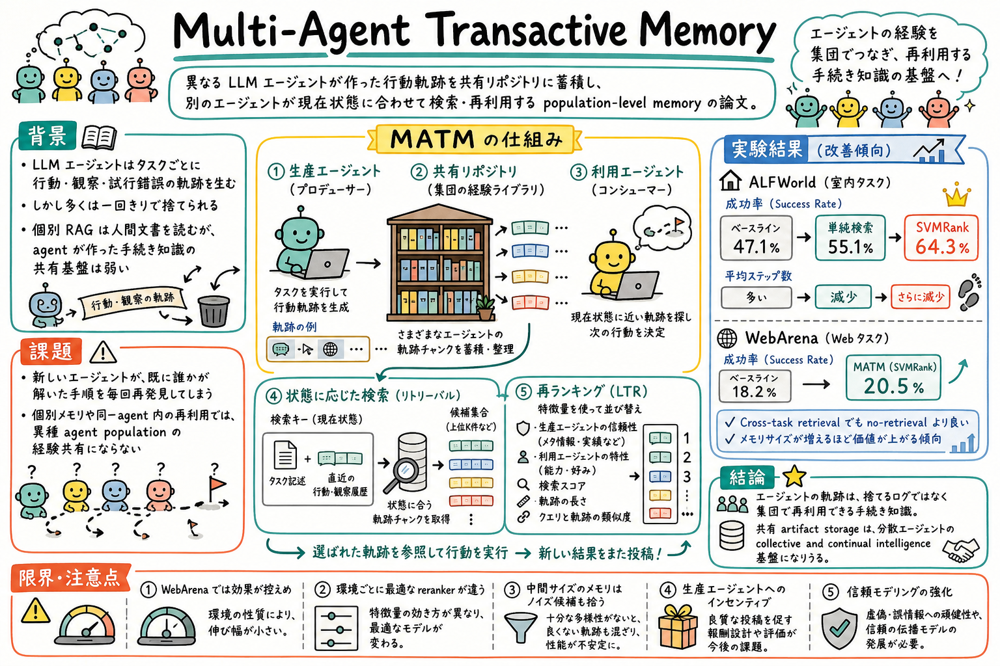

1
まず、LLM agent は行動・観察・失敗・修正の軌跡を大量に作るが、多くは一回で捨てられると説明する。
Reading artifact
この論文は、LLM エージェントが実行中に生んだ行動軌跡を、個別 agent の一時ログではなく、異種 agent population が検索・再利用できる共有メモリとして扱う。

まず、LLM agent は行動・観察・失敗・修正の軌跡を大量に作るが、多くは一回で捨てられると説明する。
次に、RAG は人間が書いた文書を agent に読ませるが、MATM は agent が作った手続き的 artifact を別の agent に読ませる点が違うと置く。
その上で、producer agent、共有リポジトリ、consumer agent、状態に応じた検索、reranking の順に仕組みを説明する。
最後に、ALFWorld と WebArena で成功率とステップ効率が改善し、cross-task retrieval やメモリサイズの効果も見た、と結果をまとめる。
agent-generated trajectories は、後続 agent が使える手続き知識になりうる。。MATM retrieval は ALFWorld と WebArena の両方で no-retrieval より成功率と効率を改善した。 ログを監査用に残すだけでなく、将来の agent 行動を改善する shared memory として扱える。
単純な類似検索だけでなく、trajectory の下流効用を予測する reranking が効く。。ALFWorld では single-stage retrieval の成功率 55.1% に対し、SVMRank reranking は 64.3% まで上がった。 agent memory 検索では、意味的に近いかだけでなく、その consumer agent に本当に役立つかを見る必要がある。
共有メモリの価値は、同じ task type や強い producer だけに閉じない。。cross-task retrieval でも no-retrieval baseline を上回り、capability gap だけでは retrieval benefit を説明しきれないと論じている。 異種 agent / 異種 task の経験を共有する設計に意味がある。
この論文は、エージェントの実行ログを『終わったら捨てるもの』ではなく『次のエージェントが使える手続き知識』として見る論文です。
普通の RAG は、人間が書いた文書を検索して agent に読ませます。MATM は一歩進めて、agent が環境とやり取りして生んだ trajectory、つまり行動と観察の列を共有リポジトリに入れます。
新しい agent は、自分のタスク説明と直近の状態を検索キーにして、似た状況の軌跡チャンクを取り出します。さらに producer の信頼度、consumer の特性、検索スコア、軌跡長、query と軌跡の類似度などを使って rerank します。
結果として、ALFWorld では成功率が 47.1% から 55.1%、SVMRank reranking で 64.3% まで上がり、平均ステップも減っています。WebArena でも改善は控えめながら出ています。
実務的には、agent のログを単なる監査ログで終わらせず、再利用できる trajectory chunk、skill seed、失敗回避例として保存する設計に使えます。
この論文の良さは、agent の実行軌跡をログ保管や反省材料に閉じず、他の agent が直接使える手続き知識として扱う点にある。長時間タスクを何度も走らせる運用では、同じ探索や同じ失敗を何度も繰り返すことがコストになる。
ゆうきの文脈では、paper-watch、article-page-publisher、GitHub 作業、wiki query、scheduled-ops の実行ログがすでに大量の trajectory を生んでいる。MATM は、それらを『あとで読むログ』ではなく、『別の実行が途中で検索して使う経験チャンク』として見るための地図になる。
特に刺さるのは、producer trust modeling と consumer personalization である。同じ trajectory でも、どの agent が作ったか、どの consumer agent が使うか、どのタスク状態で取り出すかによって価値は変わる。これは skill や wiki メモの検索にもそのまま戻せる。
Multi-Agent Transactive Memory は、LLM エージェントの経験を個別 agent 内の記憶ではなく、集団で共有される手続き知識として扱う論文である。agent はタスクを解く過程で、行動、観察、失敗、修正、次の一手のような rich な軌跡を生む。しかし多くのシステムでは、その軌跡は一回の実行で捨てられるか、作った agent だけに閉じる。
著者らは、人間の集団が『誰が何を知っているか』を手がかりに知識を分散利用する transactive memory の発想を、LLM agent population に持ち込む。producer agent は自分が作った trajectory を共有リポジトリへ投稿し、consumer agent は現在のタスクと状態に近い trajectory chunk を取り出して、次の行動を決める。
ここで重要なのは、検索対象が人間の文書ではなく agent-generated artifacts であることだ。RAG は人間が書いた文章を agent に渡すが、MATM は agent が実際に環境とやり取りした action-observation history を再利用する。これは、説明文ではなく手続き知識を検索する設計に近い。
論文は、ALFWorld と WebArena という interactive environment で MATM を評価する。単純な single-stage retrieval でも成功率とステップ効率が改善し、さらに learning-to-rank reranking を入れると、特に ALFWorld で効果が大きくなる。
読む価値は、agent memory を『個体の長期記憶』から『集団の経験リポジトリ』へ広げる点にある。これは、おい丸の scheduled-ops、subagent、paper-watch、wiki、skill 更新ログを、単なる記録ではなく次の agent が使える reusable trajectory として扱う見方につながる。
この論文は、異種 LLM agent population のための共有メモリ基盤 MATM を提案する。対象は、自然言語のメモだけではなく、環境との interaction trajectory、つまり action-observation の列である。
従来の memory や thought reuse は、作った agent 自身の再利用に閉じがちだった。MATM は、agent が自由に参加する open ecosystem を想定し、producer が作った軌跡を consumer が取り出せる shared repository として設計する。
論文の主張は、agent-generated artifacts は人間文書とは違う種類の検索対象であり、agent が消費しやすい procedural knowledge を含むという点にある。
第一の貢献は、agent trajectory を population-level memory として蓄積・検索する MATM の枠組みを定義したこと。
第二の貢献は、タスク説明と直近の action-observation history を key にし、次の interaction segment を value として保存する state-conditioned key-value indexing を使ったこと。
第三の貢献は、producer metadata、consumer metadata、検索スコア、query feature、trajectory feature、query-trajectory interaction feature を使う Learning To Rank Trajectories を導入したこと。
第四の貢献は、ALFWorld と WebArena で、shared trajectory retrieval が成功率と効率を改善し、cross-task retrieval や memory scaling でも有用性を示したこと。
まず、各 agent は interactive environment でタスクを解く。その過程で、観察、行動、次の観察という系列が trajectory として記録される。
次に、その trajectory を共有リポジトリに入れる。producer agent は経験を投稿する側、consumer agent は検索して使う側であり、同じ agent が状況によって両方の役割を持つ。
検索では、タスク記述と直近の interaction history を query / key として使う。取り出される value は、その状態から先の数ステップの trajectory chunk である。これにより、consumer は単なる似たタスクではなく、現在状態に近い手順を参照できる。
初段検索は dense retriever などで候補を出す。その後、learning-to-rank reranker が候補を並べ替える。特徴量には、producer agent の能力情報、consumer agent の ID、検索スコア、query 長、trajectory 長、query と trajectory の類似度などが含まれる。
reranker の教師信号は、意味的に似ているかではなく、その trajectory chunk を注入した時に consumer agent の成果が no-retrieval よりどれだけ良くなるかという marginal utility に基づく。
ALFWorld では、no retrieval の success rate 47.1% に対し、single-stage retrieval は 55.1% へ改善した。SVMRank reranking を入れると 64.3% まで上がり、平均ステップも 11.77 から 10.35 へ減少した。
WebArena では、no retrieval の success rate 18.2% に対し、single-stage retrieval と一部 reranker が 20.5% へ改善した。効果は ALFWorld より控えめで、長い horizon と初期ステップのエラー感度が影響している可能性がある。
capability gap の分析では、retrieval benefit は単に強い producer から弱い consumer への移転だけでは説明できない。効果は population 全体に広く分布する。
retrieval scope の実験では、full retrieval が最も強い一方、cross-task retrieval でも no-retrieval を上回る。これは、trajectory がタスク境界を越えて再利用できる手続きパターンを含むことを示す。
memory size の実験では、ALFWorld はメモリが大きくなるほど単調に改善する。WebArena は中間サイズで一度落ちるが、full scale で回復し、ノイズ候補と coverage のバランスが重要だと分かる。
LLM agent が作った行動軌跡を、個別 agent の一時ログではなく、異種 agent population が共有・検索・再利用できる memory infrastructure にできるか、という問い。
普通の RAG は主に人間が書いた文書を検索する。MATM は agent が環境とやり取りして作った action-observation trajectory を検索し、次の行動に使う。
producer agent は自分の task execution でできた trajectory を共有リポジトリへ投稿する agent。consumer agent は現在のタスクや状態に合う trajectory を検索して使う agent。
元のタスク説明だけでなく、直近の行動・観察履歴を検索キーにして、今の状態から参考になる次の trajectory segment を取り出す方法。
意味的に近い trajectory が必ず役に立つとは限らないため。producer の信頼度、consumer の特性、trajectory の長さ、query との関係などを使い、下流で役に立つ候補を上げる必要がある。
ALFWorld と WebArena で、no-retrieval より success rate と step efficiency が改善した。ALFWorld では SVMRank reranking により成功率が 64.3% まで上がった。
ある。full retrieval が最も良いが、cross-task retrieval でも no-retrieval baseline を上回り、異なる task type の trajectory にも転用可能な手続きパターンが含まれることを示している。
環境によって効果や最適 reranker が違い、WebArena のような複雑な環境では改善が控えめになる。メモリが増えるとノイズ候補も増えるため、検索と reranking の設計が重要。
scheduled-ops や subagent の実行ログを、単なる記録ではなく、別の作業が検索して再利用できる trajectory chunk や skill seed として保存する発想に使える。
agent の経験は捨てるログではなく、集団で検索・再利用できる手続き知識にできる、という論文。